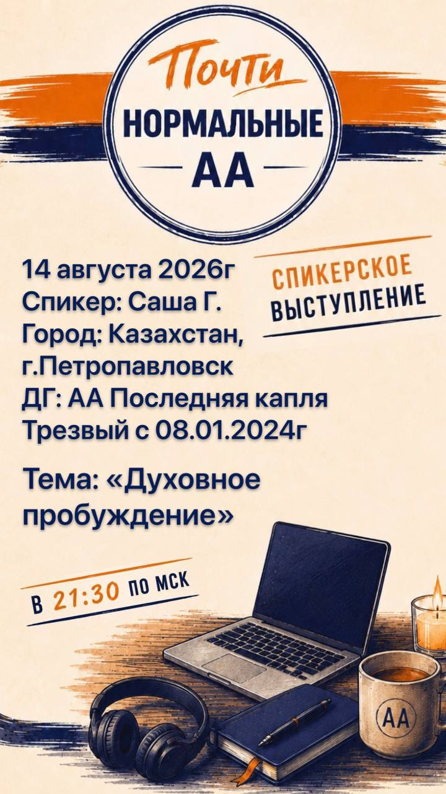

Объявления

Спикерское выступление в группе АА «Почти нормальные»
14 августа 2026 года в 21:30 по московскому времени.
Спикер: Саша Г.
Город: Казахстан, г. Петропавловск
Домашняя группа: АА «Последняя капля»
Трезвый: с 08.01.2024
Тема: «Духовное пробуждение»
❤️ Собрание проходит в Zoom, код доступа: 111.
Подключиться к собранию в Zoom
📲 Мы в Telegram:
Telegram группы «Почти нормальные»